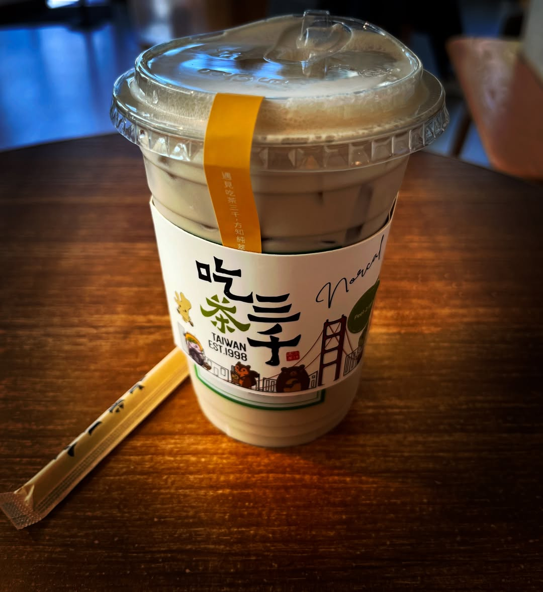

未落完的雨
二〇二六 · 夏
午後的光落在店裡，白得有些寂寞。窗外街聲隔著玻璃遠遠浮著，車影、人影，經過時都只剩一層淡淡的晃動。桌面微涼，幾杯喝了一半的茶飲散在窗邊，杯壁凝著水氣，細小的珠痕沿著塑膠杯緩緩滑下，像一場未落完的雨。
窗邊幾人各自伏案，或看書，或對著電腦。她推門進來時，原也只想依著前一位客人，隨意點一杯便罷，免得叫人看出自己同這地方尚有幾分生分；可到了櫃檯前，架上幾個中文字忽然入眼，杯身又小小印著台灣二字，話到口邊，便改了。
店員問起糖與冰，她答得很快。
三分糖，去冰。
說罷才覺，那聲音像是從很遠的地方回來的。她低頭翻找錢包，假作沒有察覺自己方才那一點慌張。其實不過是一杯奶茶，原也沒有什麼可說的。
奶茶送到桌上時，茶色隔著杯身顯得溫淡，冰塊浮在其中，輕輕碰著杯壁。杯蓋上已凝著一層薄薄水氣，吸管斜放在桌邊，塑膠封套上也印著熟悉的字樣。她揀了靠窗的位置坐下，慢慢拆開吸管，插進杯蓋。輕輕一聲響，茶香便從那小小的口子裡透了出來。
那香氣並不濃，卻不知怎地，使她想起家附近那條街。傍晚時機車一輛接著一輛過去，飲料店前總有人排隊；誰若要出門，總有人隨口問一句，要不要順便買喝的。那時她多半說不用，或嫌太甜，或說喝了睡不著。如今隔了這樣遠的路，倒肯把一杯尋常奶茶捧在手裡，像怕它太快喝完。
若有人問起，她大約仍只會說，是口渴了。
她低頭喝了一口。冰意先到，甜味隨後浮起，不久便讓茶底一點微澀慢慢托住。那澀味很淡，不似苦，卻也不肯即刻散去，只在舌根深處留著。她想起從前總嫌奶茶太甜。至於茶底這一點澀，倒像是今日才嘗出來的。
窗外有人推門出去，門鈴響了一聲，店裡復又靜下來。
她仍握著那杯奶茶，指尖沾了杯壁上的水。
水珠沿著杯身滑下，停在那兩個熟悉的字上。少頃，又順著未乾的珠痕落下，彷彿那場未落完的雨，到了此處，才悄悄續了一滴。